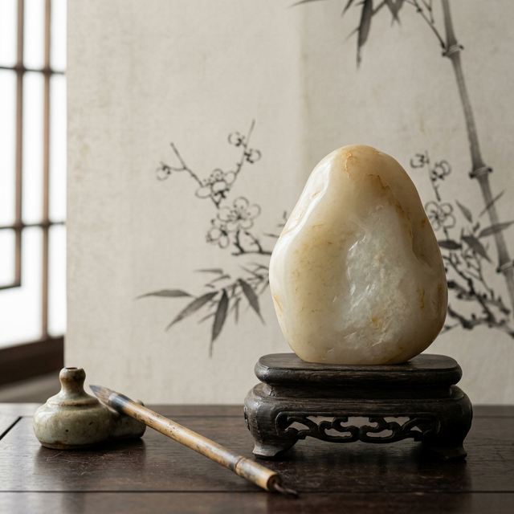
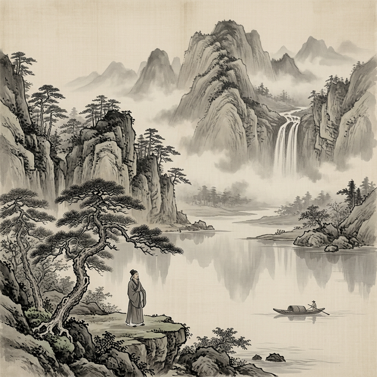
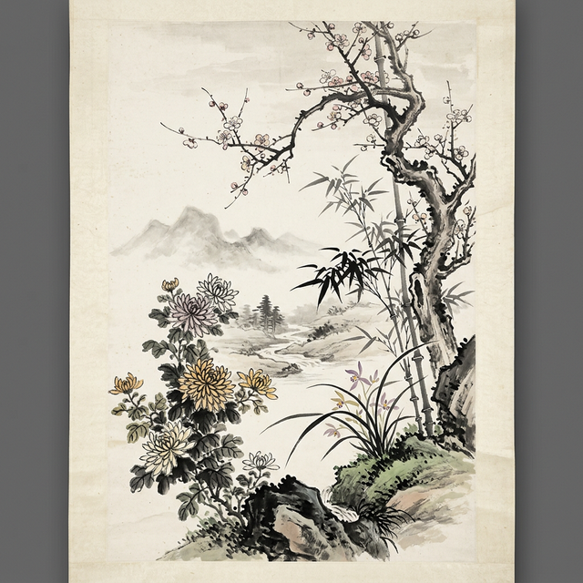

以物喻人 · 格物养德 · 草木本心
一草一木，一花一树，虽各有千秋，却同源于深植中华文明数千年的"比德"传统。

夫玉者，君子比德焉
《荀子·法行》有言："夫玉者，君子比德焉"，将玉的温润坚洁与君子的品德相映照。

智者乐水，仁者乐山
孔子亦云"智者乐水，仁者乐山"，以山水的灵动与厚重，喻指智者的聪敏、仁者的宽厚。这便是比德的核心：以物喻人，将自然之物的特性，与世人的道德情操、精神追求相融相通，让自然之美成为人格之美的具象表达。这种思维，深深浸润了中华诗词的创作脉络，成为文人墨客寄情抒怀、言志托意的重要方式。

托物言志 · 梅兰竹菊
草木无言，自有本心；诗词有韵，凝萃人格。从梅的坚贞、兰的高洁、竹的刚柔，到比德传统的文化根基，在本节课中，我们一同解锁了诗词中草木的人格，也读懂了藏在枝叶间的中华文脉。这份植物人格图谱，不仅是古诗文学习中理解"托物言志"的核心素材，更藏着中华民族对崇高品格的持续追求，是我们的精神根基。
今天，我们品读诗词中的草木，不仅是感受古典美学的魅力，更是从中华优秀传统文化中汲取精神力量，在草木人格中照见自我、塑造自我。
愿我们皆能以草木为鉴，格万物之性，
养浩然之气，守草木本心，赴青春征途。